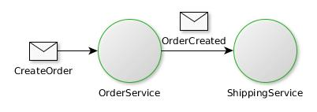

Simple message-driven microservice in JAVA
RabbitMQ
- Open source written in Earlang
- Maintained since 2013 by Pivotal (Spring)
- Broker which implements AMQP protocol
- standard way of messages exchanges between heterogeneous applications
- not an API
- independant of technology (Python, Java, PHP...)
RabbitMQ core concepts
Exchange - where the messages are published
Queue - where the messages are consumed
Binding - distribution rules from exchanges to queues

RabbitMQ clients
There are a lot of client implementations : Java, .Net, PHP, Go, Ruby, Python, Scala, Perl...
In Java, several possibilities :
- RabbitMQ Java client
- Apache Camel - RabbitMQ component
- Spring AMQP
- Spring Cloud Stream
RabbitMQ for developers
Official docker image available on Docker Hub
docker run --rm -d --hostname my-rabbit --name rabbit -p 5672:5672 -p 15672:15672 rabbitmq:3-managementManagement console : http://localhost:15672
Spring Cloud Stream
Built on top of Spring Boot and Spring Integration, it is used to build easily message/event-driven microservices.
It supports bindings with RabbitMQ and Apache Kafka brokers.
It allows minimal configuration and connexion code, thanks to annotations, to focus on business code.
Annotation style programming
@EnableBinding on class declaration
@StreamListener on method declaration to consume messages
@SendTo on method declaration (+ return type) to publish messages
Sample
@EnableBinding(Sink.class)
public class MessageHandler {
@StreamListener(Sink.INPUT)
public void handle(MyEvent myEvent) {
// do what you have to do with the message
...
}
}
Let's go
- Start RabbitMQ ! Play with the UI localhost:15672
- Create the 1st project ShippingService which will consume some order events. (Can use Spring Initializr through https://start.spring.io or directly in IDE)
Try it
- RabbitMq management UI => see the created exchange and queue
- Publish a message with the UI and log it
- Manage name and durability of created objects ; try properties
- spring.cloud.stream.bindings.input.destination
- spring.cloud.stream.bindings.input.group
Build order-service
This one is publisher and consumer : a processor (source + sink)
It should connect to same exchange than shipping-service
Add an output

You can extend Processor interface...
Error handling
- Try to throw an Exception and see what happens
- Manage DLQ with properties
- spring.cloud.stream.rabbit.bindings.input.consumer.auto-bind-dlq
- spring.cloud.stream.rabbit.bindings.input.consumer.republish-to-dlq
- (You will have to delete the queue before)
Dynamic publishing
It needs to code the message sending
@Autowired
private BinderAwareChannelResolver resolver;
...
resolver
.resolveDestination("nameofchannel")
.send(MessageBuilder.withPayload(messagePayload).build());
Handling in function of header
@StreamListener(target=Processor.INPUT, condition = "headers['bu-id']=='1'")
public void receiveForBu1() {
// ...
}
@StreamListener(target=Processor.INPUT, condition = "headers['bu-id']!='1'")
public void receiveForBuNot1() {
// ...
}
This is not compatible with @SendTo annotation ☹